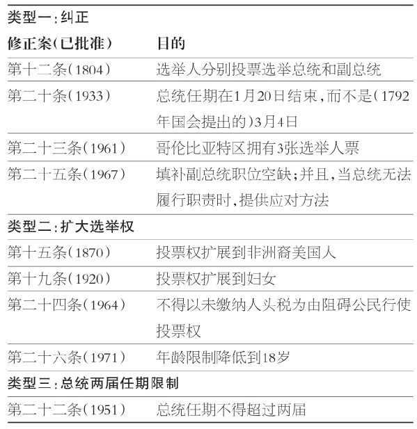
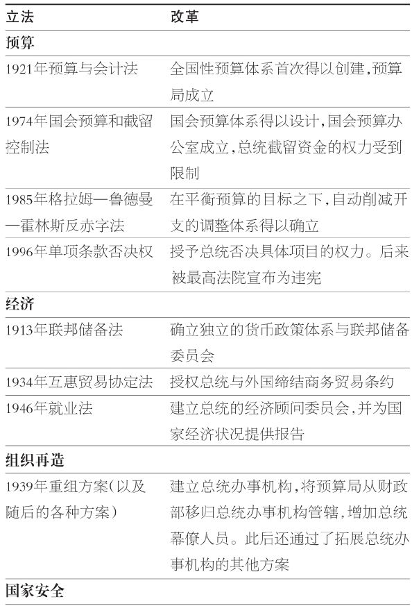
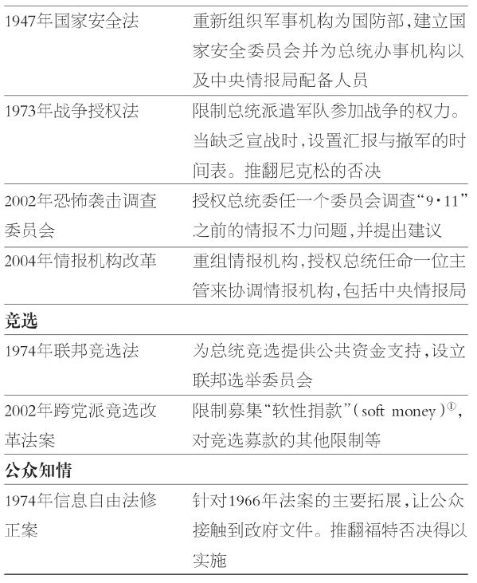
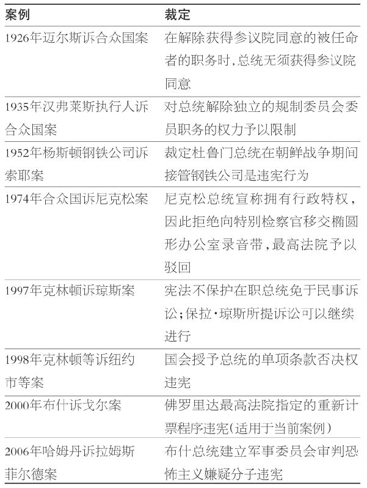
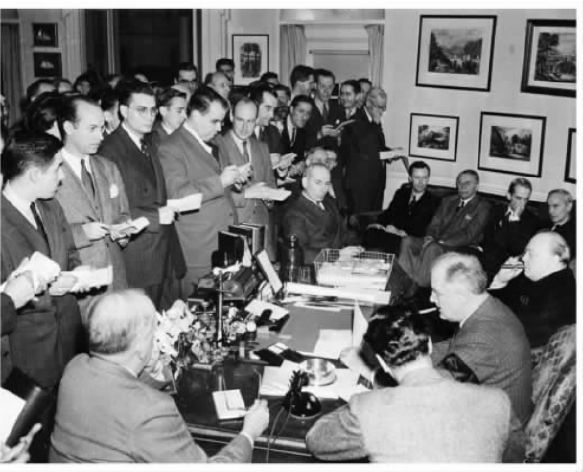

美国及其宪法已经迈入了第三个世纪。每个世纪之交都是多事之秋。1800年总统大选便充满着强烈仇恨与个人恩怨。竞争在两位现任者之间展开：时任总统约翰·亚当斯与副总统托马斯·杰斐逊。那次竞选大部分都是由党派推动展开的。杰斐逊赢得73张选举人票，但是他的竞选伙伴阿龙·伯尔也获得相同数目的选举人票。伯尔拒绝让步，经过众议院36轮投票，杰斐逊才最终获胜。权力于是从联邦党人手中转移到民主共和党人手中。“1800年大选是一次重大事件，它显示出这个年轻的共和国具有扭转乾坤的能力。” [60]
进入20世纪之时的总统大选，则是一场在时任总统威廉·麦金利与平民主义者威廉·詹宁斯·布赖恩之间展开的重新竞争。许多棘手议题都与从农业社会向工业社会过渡所衍生的各种变化相关，这些难题即使解决不了，也要加以考虑。与美国在世界上扮演的更为重要的角色相关，新问题不断涌现。麦金利几乎没有参加竞选造势，便轻松获得连任，尽管并不是压倒性的胜利。两党制继续面对来自第三党的挑战，特别是新世纪最初几年中的进步党人。1901年麦金利遇刺身亡，活跃的继任者泰迪·罗斯福肩负起了领导这个国家迈向新世纪的重担。
2000年的总统大选也可以列入这些“世纪转折”时期的竞争，堪称具有历史性。国会中民主党的主导地位已经于六年之前被打破，小布什的当选为华盛顿带来了近五十年来第一个完全由共和党人主导的政府。布什的当选是历史上最富争议的选举之一，如实呈现了遭弹劾总统克林顿与共和党国会之间的敌对关系，以及占国会少数的民主党人的挫败感。最高法院解决了本次选举的争议，加上小布什在普选票上的落败，使本国首都强烈的党派争斗情绪火上浇油。
这三次大选竞逐也反映出总统制的变化。总统的宪法权威在实质上依然相同，但是施展这种权威的环境却在每个世纪的尾声显示出极大的不同。杰斐逊就职之时，总统制仍在创设过程中。此时，它更是一个个人而不是一种机制，在职者试图领会自己权力的界限与意涵。
到1900年，总统制开始显示出优势地位。议会制政府 ——伍德罗·威尔逊1885年的一部专著即以此为题——能够处理农业社会中的各种议题。工业化与世界经济的增长要求官僚机制、等级制度和行政控制的专业化，包括通过行政首长来实现这种专业化。继任总统西奥多·罗斯福乐于承担这些职责，伍德罗·威尔逊与富兰克林·罗斯福也持相同态度。这个世纪前三分之一时间内的其他总统，塔夫脱、哈定、柯立芝与胡佛，则不太接受关于总统权力的扩张性观点。然而，大局已定。自富兰克林·罗斯福开始，总统制在地位、影响和结构方面都将得到提升。
在两百年的时间里，总统制由个人职位——华盛顿、随后的亚当斯及杰斐逊——变成上千人共同参与的总统事业。理查德·诺伊施塔特在《世纪中期的总统制》中这样评论：“总统与总统制不再是同义词；这一职位现在构成了一个官场。” [61] 白宫依旧是总统制的象征性场所，但是它仅仅容纳了一小部分为总统效力的人员。因此，当小布什2000年被选举为总统之后，首要任务便是填补职缺——从任命人事主管开始。
这一评论提示了在21世纪考虑总统制的一个重要教训：在解释发生的转变方面，重大事件、它们产生的议题、任职的人一般比改革更为重要。诺伊施塔特再次评论道：“当今的总统制拥有不同的模样……但是……那个模样并不是由法令法规或者人员配备所凭空生出。相反，这些都是对外部环境施加于我们政府形式的影响的回应 ；不是原因，而是结果。” [62] 我们不应该对这一教训感到意外。毕竟，总统制是代议制民主中的核心机制。就这一点而言，总统制会被期待去回应重大事件，包括作出各种调整以更加有效地发挥功能。
“与世界上其他国家的人相比，美国人一直都属于最充满激情的改革者。” [63] 总统制是改革者频繁关注的对象。它被许多人认定为分权体系中最为强势的分支。因此，依据政府行为的成功抑或失败，总统制也会受到过分的褒扬或者诟病。在三个分支之中，国会最倾向于推动总统制改革，因为它经常与总统竞逐以分享权力。在这种权力竞争之中，司法机构的角色是保持更大的距离，并且依赖于个案的具体情况。法院的裁定通常为改革设定条件，然后再由其他两个分支进行设计。
改革 （reform）意味着什么？它如何不同于改变 （change）？这里所说的改革，是指变更总统制的结构或权威的重大努力。它们是指那些将重新安排机制运作方式作为唯一目的的情形。赋予总统执行政策的新权力并不包括在内。例如，宪法第二十二条修正案限制总统任期为最多两届，这十分明确地是一项改革；但是，赋予总统设定排放标准从而改善空气质量的权力，则并不属于改革之列。
作为竞争分支，国会通常提议对总统制进行彻底的体制改革。几乎从未出现过相反的情形：总统支持对国会进行改革（如果尝试这种方式，必然会遭到国会山的深恶痛绝）。国会议员经常提出警告，总统特权可能导致“皇帝式总统”，扭曲平等权力的分立。 [64] 这些担忧已经衍生出各种法规与宪法修正案，以纠正异常情形或施加制约条件。
改革很少带来想要的转变。它们通常由在重大决定（例如参战）上的分歧所推动。然而，这种纠正往往是程序性的（例如，改变如何作出派遣部队的决定）。不幸的是，对改革者而言，改变组织、规则与程序并不能确保结果尽如人意。改革往往会产生预想不到的结果；这些结果便是改变。
欧文·哈葛罗夫和迈克尔·纳尔逊的陈述特别好地归纳了改革与改变之间的不同之处：“总统的领导力和国家政治不可变更地交织在一起。” [65] 这个国家中正在发生的一切是由，并且应该由华盛顿宾夕法尼亚大道的两端同时予以代表。 [66] 诚如哈葛罗夫和纳尔逊所示，改革者往往对总统应该如何行事怀有一个偏好模式。但是，这些“专家给出的设计”，极少能够说明对那些为治理带来转变的重大事件与议题的真正回应。唐纳德·凯特尔明智地将回应与改变全部归于最初的设计：“美国缔造者们非凡才能的标志……就在于当新问题出现之时，这个体制持续不断地延伸、转变与适应的卓越能力。” [67]
改革可以通过多种方式实施：宪法修正案、法令法规、法院裁定、惯例和公众期待等。促成转变的目的也多种多样：匡正缺陷、改善政府流程、重组政府、授予权力、阐明或限制权力、重新分配权力、扩大权限等。有些时候，改革的动力源自一种判断，即掌权者在行使权力时走得太远；在其他时候，则是因为在某种特定情况下权力的使用尚没有先例可循。由于要应对不熟悉的反恐战争，两种动力在“9·11”之后都得到了体现。如凯特尔所言，改革者经常试图使行政机构变得更加负责。但是，在一个分权体系之内，对事态发展的责任归属予以衡量并非易事，不过改革要想取得效果，这将必不可少。 [68] 换言之，权力分立分散了责任，使得在不改变宪政秩序的前提下集中责任变得极富挑战性。
宪法修正案
鉴于宪法修订程序的复杂（要求国会和州两个层面上的绝对多数），人们不会期盼宪法修正经常发生。当前，共有9条宪法修正案直接影响总统制。它们可以分为三种类型：对原始文件中的遗漏与异常之处予以纠正、扩大选举权、限制任期。
如表7.1所示，第十二条、二十条、二十三条和二十五条修正案对宪法提供了必要的纠正。这些修正案拥有不同的效果。如前文所讨论的，第十二条最为关键。第二十条与二十五条也拥有重要的有利影响。不妨想象一下，如果今天新总统还是于3月4日而不是1月20日就职，此时已经是选举之后四个月了。值得一提的是，规定这一变化的第二十条修正案直到1933年才得以批准生效。
在近几任总统任期中，尤其是自卡特以来，副总统发挥的作用越来越大。自从副总统接任的规定适用以来，共被运用过两次——一次是1973年斯皮罗·阿格纽辞去副总统职务后由杰拉尔德·福特接任，一次是1974年8月9日福特在尼克松辞职后继任总统，纳尔逊·洛克菲勒继任副总统。1998年克林顿被众议院弹劾，如果参议院1999年裁定将克林顿免职的话，这一规定本来可以再次得到援用。继位总统戈尔本来会提名一位副总统在1999至2001年辅佐他。
表7.1 通过宪法修正案实现的改革

来源：作者汇编。
如果1974年尼克松被弹劾并被免职（如尼克松辞职之前一些民主党人所威胁的），再如果第二十五条修正案并未得到通过和批准，那么将没有副总统来继任总统职位。如果上述条件成真，众议院议长、来自俄克拉荷马州的民主党人卡尔·艾伯特将会承继总统大位——他并不情愿如此。
第十五条、十九条与二十六条修正案使选举权顺应了当时的形势发展——确保了非洲裔美国人与妇女的投票权，并将投票年龄限制降低到18岁。第二十四条修正案保证了缴纳人头税并非享有投票权的前提，这是迟到已久的保证。久而久之，选举权的修正案将会改变总统竞选的性质。每一项修正案都带来合格选民数量的大增。然而，这些选民的投票率的增长也需要很长时间。
剩下的那条修正案，第二十二条修正案，重新审视了被视为在制宪会议上已有定论的那次辩论。按照惯例，总统会自觉地把任期限定在两届之内。富兰克林·罗斯福并没有遵循这一惯例。伴随第二次世界大战结束以及那位连任三次的总统拥有的超级行政权力，共和党主导的国会在1947年碰头之后不久，便提出一项规定两届任期限制的修正案。这一修正案很快在国会两院以需要的三分之二多数通过，并且在4年之后送交各州批准。历史学家福里斯特·麦克唐纳称之为“打向罗斯福身后的一记耳光” [69] 。
第二十二条修正案的效果还难以下定论。它的第一次效力发挥在艾森豪威尔身上（这一修正案在杜鲁门在任期间提出，因此杜鲁门并不受其制约）。要想判断这一修正案的效果，就必须先回答一个难以捉摸的问题：那些任满两届的总统会争取第三任期吗？就年龄与健康状况而言，艾森豪威尔与里根本有可能继续谋求第三任期。剩下的就是克林顿了（在本书撰写之时，小布什正处于第二任期）。就克林顿而言，年龄本是寻求第三任期的有利因素。在第二任期结束时，他54岁。
我们可以说的是，这一宪法修正案把一个问号变成了句号。总统会谋求第三任期吗？不能。结果，连任之后的总统大选（例如，1960年、1988年、2000年，以及可能的2008年）以两党内部的公开角逐为特色。于是，就在赢得第二任期的总统就职之后不久，又一次总统竞选便会拉开帷幕。许多候选人可能在国会中供职——大多数是在参议院，急切地想在竞选之前增加自己的筹码。同时，总统内阁及幕僚知道自己的时间同样有限，这促使他们考虑自己的政治生涯。对于一个受限于任期的领导人来说，克服对未来的急切以专注于眼前是一个重大挑战，这也是改革所产生的始料未及的结果之一。
法规
大多数的改革和对改变的适应是通过一般的立法过程来实现的。与单纯地试图找出管理议程的最好或者最可行的方法相比，国会山与白宫中的常规工作较少地属于有意识的改革。例如，当老年保健医疗制度与医疗补助制度这样的项目在历经多年后落实到位时，国会授权行政部门有组织、分步骤地采取必要措施来有效实施这些项目。这类大规模项目获得通过的一个结果，便是官僚机构的显著膨胀与总统职责的日益增多。这些情形中都有改革的决心，但是它指向的是提供医疗保健，而不是机构膨胀。
国会议员有责任监督对这些项目的管理，但是在现实中，他们却依赖于行政机构，即使是在监督方面。这种依赖性，是对行政机构相对于立法机构的权力的一种衡量标准。
值得注意的是，总统并不会一直喜欢承担更多的责任。事实上，因为失控的支出对赤字造成的影响——这也会进一步限制总统开辟新项目的选择空间，那些接手各种权利保障项目的总统可能试图抑制这些项目的增长。
表7.2 通过法规法令实现的改革：案例精选


①“硬性捐款”是直接支持某候选人的捐款；与之对应，“软性捐款”不是直接捐给某一候选人，而是捐给某政党的捐款。——译注
来源：作者自多种资料汇编而成。
在实质性政策主题（例如农业、福利、医疗保健与犯罪）方面的立法之外，也会不时通过一些法律，这些法律或者是为了支持或约束总统特权，或者是为了影响其施政方式。通常情况下，就意图而言，此类法律具有更为直接的改革特征。推动这些立法的人试图改变的不仅是决策“内容”本身，还试图改变“如何”决策以及“谁”来决策的问题。表7.2列举了20世纪与21世纪初这类法律的一些例子。这15项法律代表了改革总统制与行政分支的努力，主要涉及6项关键职能：预算、经济、组织能力、国家安全、竞选以及公众知情。这些法律中的大部分都着眼于加强或限制总统制；有一些则是为了加强国会地位，以使国会更为有效地与行政分支竞争。
回顾这些法律，显而易见的是，总统发挥更大的作用是大势所趋，当然间或也有对总统权力施加制衡与控制的努力。从逻辑上来看，大多数变化都是由政府项目数量的增长与项目的复杂性所引起的。预算问题的重要性与日俱增，它要求经济学和会计专家的专业知识的辅助。因此，这项职能便日益集中到行政部门。因为对行政机构的依赖，国会变得日益焦虑不安；于是，1974年国会确立了自身的预算程序，包括雇用自己的预算专家。
在经济、国家安全政策与总统制的机制化方面，相似的趋势也变得引人注目。一般说来，即使总统只有有限的工具来管理经济，他们也必须为国家经济状况负责。因此，举个例子，通过在货币政策中扮演的角色，独立的联邦储备委员会拥有影响经济发展的大得多的权力。国会也授权支持总统对经济进行管理，并且总统也出于这个目的在白宫中进行了重组（最近的一次改变是，1993年国家经济委员会依据行政命令得以建立）。
作为三军统帅，总统在国家安全政策中的角色具有宪法基础。这一地位于1947年得以实质性地奠定；当时，军事机构统一了编制，国家安全委员会得以建立并配备了人员。就预算问题而言，国会会不时地对总统在其中的支配地位表达关切，由此努力限制未经国会宣战的军事行动，或者在事态发展有偏差时，调查国家安全方面的决策。这些举措并非没有效果，但是在对外与国家安全政策上，总统依旧处于领导地位。
作为一种机制，总统制的成长过程从未间断。其成长的关键点是1939年总统办事机构的创立。这个名字本身就承认了，需要这一“伞式组织”来掩蔽为适应政府项目增长所设置的许多咨询机构。并且，职能——国家安全、经济、环境、贸易、科学——每延伸一次，另一个“办公室”或者“委员会”便会被纳入总统办事机构中最为重要的行政管理和预算局。再加上白宫办公室，这些便是构成前文所论之总统分支的单位。
笔者也将两种不同类型的法令纳入了讨论——竞选类与公众知情类。前者对改革者而言通常是一种挫败的经历。人们的注意力主要集中在竞选财务方面，关注支出的数目以及经费来源。新的法律改变了款项募集方式，却未对筹款数额予以控制，这对提供资金的金主具有不同的影响。最后，修正后的《信息自由法》使媒体与学者受益良多，同时它督促行政分支在发布与保存文件时要提高警惕。
这些法规显示了分权政府之下改革所牵涉的复杂政治关系。各个分支一直关注着自身在制度中的地位，努力保护自身特权，并对其他机构的特权感到愤怒。相应地，为应对重大事件与议程转移所设计的变化方案，宾夕法尼亚大道两端都密切注视着，看它们将如何影响权力的平衡。
通过法案进行改革的成效与教训分别是什么？首先，显而易见的是，代议制政府会回应首都之外的事态变化。例如，行政部门准备预算并处理军事问题是合情合理的。虽然它降低了代议制立法机构的影响力，但是事实就是如此。第二，行政部门在20世纪以及21世纪最初几年中得到扩张，这从逻辑上来看是必然的。前面援引的多部法规都为总统带来了更大的责任（虽然不一定伴有更大的权力）——关系到预算、军事、发动战争、经济与社会生活。第三，同样明显的是，国会尚未跟上前进的步伐。国会议员已经通过如下方式作出了努力，包括创立预算程序、重新组织委员会、增加人手、增加专门立法机构以及要求加强行政问责等。但是，巨大的挑战存在于立法筹备以及对实施这些立法的监管之中。第四，开弓难有回头箭。我将《战争授权法》纳入讨论主要便是为了说明这个问题。几十年来，战争一直处于重新定义的过程中。最近一次定义是反恐战争，它激起了各个分支之间关于分享权力问题的进一步争论和困惑。
最高法院的裁决
总统制改革和转变的第三个源泉来自最高法院。就最高法院大法官们的工作性质来讲，他们并不是改革者。无论个人信仰为何，他们的工作部门都不鼓励他们采取这样的主动性。然而，他们的裁决具有巩固、明晰或者阻挠总统权力的效果。人们普遍接受的观点是，最高法院会支持行政权力。毕竟，不这样做的话就意味着一个分支否决另一个分支。因此，如果真的发生这些情况，便会引起人们的注意。
至少有三类裁决会影响到总统权力。第一种裁决是取消总统中意却超出其权限的法律。例如富兰克林·罗斯福总统提议运用激进的立法来应对经济大萧条。但是，有多项方案被最高法院推翻，其中最显著的包括《全国工业复兴法》中的一项建议，它要求设置公平竞争的工业规范（1935年“谢科特家禽公司诉合众国案”），以及《农业调整法》中的条款等（“合众国诉巴特勒案”）。
第二类是针对其他分支提议的立法所作出的裁决。在水门事件期间，1974年《联邦竞选法》修正案得以提出并获得通过。在众多条款之中，修正案设定了政治捐款和支出的限额。最高法院宣判后者有违宪法第一条修正案规定的言论自由权（1976年“巴克利诉瓦莱奥案”）。这项判决意味着竞选经费将会持续攀升，总统候选人不可避免地能够动用巨额经费。
第三类据说是最高法院希望避免的那些裁决：那些取消行政权力的运用的裁决。表7.3显示了一些精选案例。这些裁决反映了最高法院的介入具有视具体情况而定的特征。换句话说，除了最高法院对总统处理前所未有事件时的越权行为的关注，我们很难通过归纳这些裁决来预测未来的裁决。
免除被任命人的职务是迈尔斯案与汉弗莱斯案的主题。新的机构和任命程序确立之后，详细阐明便处于核心位置。迈尔斯案允许解除得到参议院同意的被任命人的职务；汉弗莱斯案则限制解除日益增多的独立的管理委员会委员的职务。
有两个案例与前所未有的战时情形相关。朝鲜战争时期，杜鲁门总统特别担忧，一场蓄势待发的针对钢铁工业的罢工可能会危害备战物资的生产。想必是自恃握有三军统帅的权力，他下令接管国内的钢铁公司。最高法院驳回了杜鲁门关于其权力的解释。很久以后，小布什总统面临着一种特殊情形，即在未获得普遍的全国认同的状况下，审判被指控或被怀疑为恐怖分子的人。他的方法是设立独立的军事法庭，在未获得国会同意的前提下便展开审判。最高法院再一次驳回了他关于总统权力的阐释，同时敦请国会采取行动（“哈姆丹诉拉姆斯菲尔德案”），并在第109届国会晚些时候提出设立军事委员会来对恐怖主义嫌疑分子提起公诉。
表7.3 解读总统权力：最高法院案例精选

来源：作者自多种资料汇编而成。
“合众国诉尼克松案”与“克林顿诉琼斯案”是特殊的案例，在两案中，总统试图阻止潜在的破坏性证据进入司法程序。尼克松动用行政特权阻止水门事件特别检察官使用椭圆形办公室谈话录音。最高法院驳回了他的主张，这最终导致尼克松辞职。克林顿希望在他依旧担任总统期间，阻止保拉·琼斯的民事行为继续下去。最高法院裁定这种诉讼不会干扰总统履行职责。两个案例都全体一致地作出了不利于总统的裁定。
表7.3中的其他两个案例则几乎没有相同点。共和党控制的国会在克林顿任期中规定了单项条款否决权，这是克林顿要求的权力，他的前任们也曾要求过。最高法院发现这项行为不具有任何宪法基础。2000年，最高法院决定叫停佛罗里达州重新计票，并且出于各种实际考虑，将总统大位授予小布什。出于对解决选举争端这种特殊情况的谨慎，最高法院特别强调其裁决只适用于当前案件。
关于总统制的法院裁定，与其说是改革，倒不如说是在澄清，同时对转变作一点暗示。当国会与总统作出调整以适应新的或者正在发展的形势时，最高法院可能会接受一件要判断这些行动是否符合宪法要求的案子。这些案件有时援引1803年的“马伯里诉麦迪逊案”：“解释法律显然是司法部门的权限范围和责任。”因此，举例而言，如果总统宣称他拥有行政特权或者宣称一项决定符合固有权力，那么最高法院可能审理对这项宣称的质疑，并对总统是否正确作出裁决。
回顾这些案件，总统应该吸取的最大教训可能是：如有疑问，敬请依靠分权原则。这个信息主要暗示的是，总统应该获得国会支持或者司法许可（至少要认真检视法院的先例）。除非处于刻不容缓的危机之中，否则它建议不要单独采取行动。与之相关的教训是，事关其个人行为时，总统在主张权力来保护自身不受指控时，要慎而又慎。当他这么做时，是总统而不是法院在宣称什么是法律。
习俗惯例与民众期待
习俗惯例的变更以及公众和其他人对总统制的期待也会产生影响。这些特征比前文所讨论的因素更为杂乱无章，但是它们也暗示出政府的、政治的与社会的发展动向。
与习惯或者常规程序一样，习俗惯例就是做事的通常方式。新环境往往会确立新的习俗惯例。例如，富兰克林·罗斯福一周两次要在椭圆形办公室接见记者。记者们挤在他的办公桌周围向他发问，而他的回应往往是非正式的。除了重要演说，罗斯福与公众的交流也是很低调的。他开创了通过收音机发表“炉边谈话”的方式，当这种方式首次被运用时，被评价为“总统在运用媒体方面的革命性的进步” [70] 。

图7.1 1941年12月23日，罗斯福总统与丘吉尔首相举行联合记者招待会（美国联合通讯社图片）
通讯与交通方面的变化极大地改变了总统及其幕僚现在与新闻界以及公众互动的方式。与记者们的会面一般都记录在案，不仅可以供新闻媒体报导，通常还能提供给任何有兴趣的人翻阅。这些会面的文稿在网络上便可以查找到。总统也比以前更为频繁地巡回走动，为其施政方案争取公众支持。克林顿总统在发表国情咨文后会立即上路，去为他的提案提供合理性证明和辩护，这种做法最后成为其继任者小布什的“惯例”。
白宫其他人物的传统角色已经发生了明显的变化。在过去，第一夫人就其本身来说很少被视为公众人物（埃莉诺·罗斯福是一个主要的例外）。但是，现在情形变了。希拉里·克林顿就曾负责一项全国医疗保健提案。在过去，副总统职责寥寥，幕僚无几，并且没有官邸。以前，国情咨文是被送往国会，而不是由总统在国会发表演讲。并且，过去白宫的安保工作很是松懈。但是，所有这些，以及更多的方面，都已经发生了改变。
这些变化也有助于改变人们对总统与总统制的期待。期待可能有两种形式。第一种与新闻界及公众所了解到的总统情况——如背景、人生观、价值观等相关。第二种则是与总统制相关的预期——特别是总统在分权体系中的领导者角色及其在世界上的地位。这两种形象并不总是和谐一致，并且在总统任职期间会发生变化。
用几个实例来作一说明：杜鲁门必须应对不一致的公众期待，因为他缺乏行政经验，人们对他期待很低；但是因为紧随富兰克林·罗斯福的三个多任期，人们又对他期望较高。鉴于艾森豪威尔的军事统帅背景，人们期待他能够在杜鲁门之后重塑总统制。水门事件及其余波（包括福特总统赦免尼克松）对于总统制的形象造成了负面影响，给从未在华盛顿工作过的总统卡特带来了主要挑战。就行政经验来说，老布什位于最合格的总统之列，但是其总统职位则是由人们对他的前任罗纳德·里根的期待来塑造的。小布什面临的总统职位，由于其前任遭到弹劾并因此引发党派冲突而受到削弱，并且他还面对着人们对新总统能力及其当选正当性的各种质疑。
与此同时，对总统领导力的要求日益提升，随之而来的是人们对总统承担更大责任的期待。联邦政府施政项目的扩展与全球化带来的国家之间的相互关联，说明了为什么大多数目光都投向了华盛顿和白宫。
总统制的过去和现状都极大地影响着其未来发展。透过政治现状的棱镜看未来是展望未来的最可靠的方法。总统制的宪法地位经历的转变相对较少。其中最重要的变化发生于五十多年前，即规定总统最多任职两届。除了改革选举人团的四年一度提案外，目前并无意向针对宪法第二条作重大修正。因此，核心功能——“行政权力赋予美利坚合众国总统”——依旧保持不变。
发生变化的是行使行政权力的环境。正如我力图阐明的，纵观历史，情况正是如此。目前的形势能为我们预测未来提供什么帮助？在新的世纪，政治形势、政策议题以及行政局面都与对总统权力的评估息息相关。
政治形势
自从1992年以来，以微弱优势为特征的政治形势极少甚至从未发生变化。从强势的南方民主党人把持国会转移到共和党人掌握主导权，这个转变巩固了激烈竞争的两党制度。这种泾渭分明的分化通过红蓝州地图 [71] 更容易看清，并且可以通过一个简短术语来描述：极化。大多数分析具有一种改革派色彩，它们暗示这种分裂状况是需要纠正的。与此同时，事实是，总统选举与国会选举的结果很可能会以非常微小的差距得以确定，而并非受制于全国范围内的操纵。
微弱优势很容易带来一个政党分裂的政府。2001年，一位参议员退党而成为无党派人士，这将参议院多数控制权从共和党转移到民主党手中。如果2000年的佛罗里达州与2004年俄亥俄州选票发生一些变化，民主党本有可能赢得白宫，并且同样非常可能的是两次都由共和党控制国会。2006年的中期选举，两党在参议院以49席对49席打成平局，由两位与民主党人投相同票的独立参议员来组织参议院。
这些现实对总统制产生了深远影响。其动力是竞争与派性，而不是合作与跨党联合。总统必须谋划出策略，一方面认可微弱优势、政党政治与激烈竞争，另一方面又要在立法过程中的某些关键节点上作好妥协的准备。保密甚至隐藏计划和决定，可能同样会带来好处。处于微弱优势政治中的总统也可能留意国会中政党纪律的重要性，他需要关注，在立法的早期阶段，不能因为达成跨党协议而损坏在参议院与众议院争取领导权的努力。
微弱优势和分裂控制的党派动机有可能普遍存在，其中，有权势的少数人施展着每个可能的策略来迫使两党达成妥协。少数派的阻碍作用越大，多数派就越会寻求额外的党派优势，尤其是在众议院中。这些情形经常会导致总统的职责减少，使总统从当事人变为旁观者。
这种局面无论多么不受欢迎，却并不必然会对立法造成危害。如前文所述，法律的确得以通过，危机消弭了党派偏见；不仅是执政党，两个政党都有积极参与政策制定的动力。关键点在于，施展总统权力的背景各不相同。在权力分立体系之下，这也是极为合理的——在改革的万丈豪情中，这个细节有时却被忽略了。
政策议题
作为重大事件的主题，政策议程日新月异。与其他局势相比，关于政策的预测就不那么言之有据了。例如，克林顿任职期间与小布什任职最初几个月内已设定的主要国内议题，都因为“9·11”事件而发生变化。这个重大事件引起了若干问题，如习语所言，这些问题都“不胫而走”（have legs）。相应地，未来几任总统都可能面临着不熟悉的战争带来的政策不确定性。
或许，诸多确定性中最为主要的因素是，国家安全对其他议程的影响。作为一项主导性议题，恐怖主义就其本身而言具有严重的影响，同时它也影响到其他议题的界定。就其本身而言，反恐斗争是一场无国界的战争，在这场斗争中，敌人可能藏匿在包括美国在内的数个国家中。就其影响而言，举几个例子，诸如移民、港口安全、国际贸易与金融、联邦——州——地方的治安维持等许多议题都深受影响。
一个影响范围如此之大的议题，将会引发严肃的辩论与批评。过去有句格言说，政治口水止于水边，特别是就对总统的跨党支持而言——现在，这句话已经不成立了。几乎可以顾名思义，根据已知情况（例如常规战争）制定的规则难以运用于陌生的环境（例如无国界的反恐战争）。除非碰到类似于“9·11”那样的大灾难，未来的总统无法指望国家安全与对外政策方面的决定能够获得国会、媒体或者公众的自动支持。
如有人所指出的，反恐战争、美国在中东地区的军事行动和政治介入，以及不友善政权的核武器研制，都影响到对美国国内议题的解读。但是，还有其他现实问题关系到本土议题。大多数这类问题都源自早已入册的项目。“改革”一词被纳入几乎所有重要的总统提案中：社会保障改革、老年保健医疗制度改革、移民改革、环境改革等。国内议程主要源自政府已在从事的工作。这一事实不会伴随行政分支的更新而发生变更。2008年、2012年、2016年以及可以预见到的未来总统都将发现，为给新生事物寻找空间而开启新项目或扼杀已经存在的项目将困难重重。
行政局面
在几乎不受控制的情况下，权利保障项目与军备的成本一直在呈指数增长。支出变得没有节制。在财政收入难以跟上步伐且微弱优势政治使得税收难以增加的情形下，各种方案与重大事件决定着支出的增加。赤字随之而来，公共债务也日益攀升。1997年，克林顿总统与共和党把持的国会试图平衡未来的预算，但是2001年后的重大事件与政治发展还是刷新了赤字与国债的纪录。
有一首著名的西部歌曲，曲名为“请不要围困我”（“Don't Fence Me In”）。将总统权力想象为“被围困的”，这丝毫不夸张。总统是债务的管理者。他们在竞选时会作出承诺，但是这承诺若要兑现，尚需总统们找到一种不改变税收的方法来落实，或者他们能够提出富有说服力的解释，即拉动需求比增加债务更为重要。
政府项目的联邦化并不像行政上的变化那么引人注目。总统及其任命的人通过两级、三级或者更多级的政府管理着大多数国内议程。一些调适或许是允许的，以适应地区、各州与地方的具体环境。这一过程现在已经延伸到国土安全领域。
不足为奇的是，总统制已经发展出属于自己的专家分支。总统们希望并且需要助理来引导他们穿过项目的提出、通过与提交之路。维系前任创造的地位是继任总统比较典型的做法。白宫在很久以前便不再是单纯的行政官邸了。现在，它是努力提供行政管理并由总统承担责任的一个政府分支。
美国总统制并不是美国政府的全部。确切地说，它是一项为管理行政分支所创造的领导制度，与立法和司法分支相互影响。总统制已经发生变化，以适应国内发展与国际发展的要求。总统制也已经经历过改革，其中最值得注意的是规定总统任期不得超过两届。不过，即使就本书的写作来说，理解总统制的起点也仍是宪法所规定的分权体系。正是这份文件，要求独立遴选总统、国会成员与法官，并且任期长短各异。因为独立遴选，这些官员才在制定、实施与评估法律上相互依赖。
教训也是显而易见的。在分权体系之中，有效行使总统权力的前提是承认其他分支的合法功能。彭德尔顿·赫林这样贴切地描述总统制：“我们创造出一个执掌大权的岗位，但是我们将这种权力的全面实现寄托于影响力，而不是法定权力之上。” [72] 相应地，对总统制予以研究应该承认总统在宪政框架中的政治地位与风格。这是本书一直强调的。